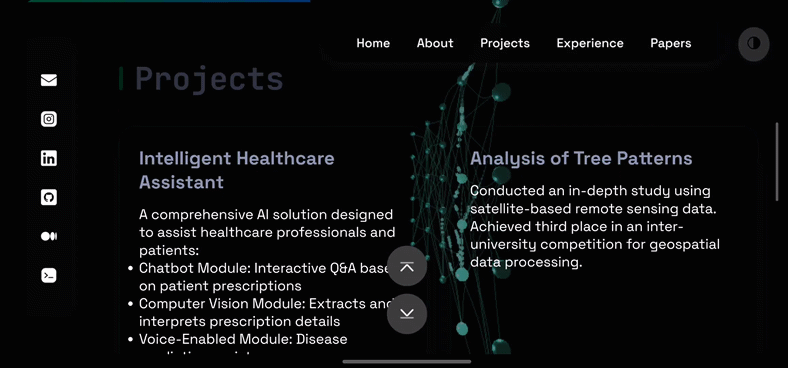

Hey there! I’m Ranjith Kumar, and I’m super excited to take you along on the wild ride of building my first portfolio website. Picture this: a newbie coder, a bunch of YouTube tutorials, and a dream to create something awesome. That’s where it all began. In this post, I’ll walk you through how I designed, coded, and hosted my portfolio—and added some fancy extras like a 3D neural network animation. Grab a snack, settle in, and let’s get started!
1. The Spark: Why I Needed a Portfolio
So, why build a portfolio? Well, as a fresh grad eager to show off my skills, I figured a website was the perfect canvas. I wanted to prove I could code, design, and maybe even impress a future employer or two. Plus, I’ll admit—I was itching to play with some cool tech and see what I could pull off. Spoiler: it was tougher than I thought, but oh-so-rewarding.
2. Designing the UI: Figma to the Rescue
I’m no design guru, so I turned to Figma after hearing it’s free and beginner-friendly. Armed with coffee and determination, I dove into YouTube tutorials—shoutout to channels like DesignCourse and Flux Academy for saving my sanity. I spent hours experimenting with layouts, fonts, and colors. My first design? Let’s just say it looked like a rainbow threw up on my screen. But after tweaking (and maybe a little crying), I crafted a clean, modern UI that screamed “me.” I was proud—and honestly, a little surprised it didn’t suck.
3. Coding the Vision: HTML, CSS, and a Dash of JS
With my Figma design ready, it was time to code. HTML and CSS are my comfort zone—I structured the page to match my layout and styled it to perfection (or so I thought). JavaScript, though? That’s where the real adventure began. I wanted interactivity—smooth scrolling, hover effects, the works. Here’s a snippet of my nav bar CSS, because who doesn’t love a sticky header?
.nav-bar {
position: sticky;
top: 0;
background-color: #333;
z-index: 100;
}
Getting it right wasn’t easy—I spent an embarrassing amount of time wondering why my hover effects wouldn’t work (spoiler: I forgot to add the JS file). But when it all clicked, I couldn’t stop grinning. My static design was alive!
4. Going Live: Hosting on GitHub.io
Next step: getting my masterpiece online. GitHub.io was my pick—free, simple, and tied to my GitHub repo. I created a new repository, pushed my files, and boom—my portfolio was live at [yourname].github.io. The first time I loaded it in my browser, I felt like a rockstar. I may have refreshed the page 20 times just to make sure it wasn’t a fluke. Hosting was the easy part; the real challenge was still ahead.
5. The Glow-Up: A 3D Neural Network Animation
After admiring my site for a bit, I realized it needed something… extra. It was cool, but not “wow, that’s dope” cool. As an AI fan, I got this wild idea: what if I added a 3D neural network animation in the background? Picture neurons firing as you move your cursor—interactive and nerdy, just my style. I had no clue where to start, so I teamed up with Claude AI. It pointed me to Three.js, and after hours of research (and a few “I’m in over my head” moments), I built it. The network randomly lights up with cursor movement, and honestly, it’s hypnotic. My friends said it’s like my brain on caffeine—chaotic but beautiful.
6. Dark Mode: Because Night Owls Rule
Another must-have? Dark mode. I’m a night owl, and staring at a bright screen at 2 a.m. is no picnic. Adding it was a puzzle—CSS variables for themes, JavaScript to toggle and save preferences. I wrestled with bugs (like forgetting to update all the colors), but eventually, it worked. Now, one click flips the site to dark mode, and it even remembers your choice. It’s a small win that feels huge—especially when I’m coding in the wee hours.
7. Building the Blog Homepage: From Chaos to Calm
While working on my portfolio, I decided I needed a blog too—a place to share my journey. I scoured sites like Medium and WordPress for inspiration, sketching layouts like a mad scientist. My early designs were a mess—too many buttons, clashing colors. But after several rounds of “this isn’t it,” I landed on the current homepage. It’s simple, readable, and (dare I say) pretty slick. I’m happy with it, but I’m curious—what do you think? Does it work for you, or should I tweak it more?
8. The Struggles: Tears, Code, and Coffee
Let’s talk struggles, because this wasn’t a fairy tale. Making the site responsive was my Everest—media queries turned into a game of whack-a-mole. Fix the desktop view, break the mobile one. I spent hours tweaking pixel sizes, cursing my screen. Then there was the JavaScript for the neural network. As a JS rookie, I stared at error messages like they were alien hieroglyphs. One night, I had so many tabs open—Stack Overflow, MDN, YouTube—that my laptop begged for mercy. But with grit and caffeine, I cracked it. Every bug fixed was a mini-party in my head.
9. How I Decided on the Final Version
Settling on the final design wasn’t planned—it evolved. After the animation and dark mode, I kept tweaking, asking myself, “Does this feel like me?” I almost added a chatbot (overkill, I know), but decided simplicity was key. One day, I showed it to a friend who said, “Dude, stop messing with it—it’s awesome.” That’s when I knew I’d hit the sweet spot: functional, unique, and true to my vibe. It’s not perfect, but it’s mine.
10. Let’s Connect!
And that’s the tale of my first portfolio! It’s been a blast—frustrating, thrilling, and totally worth it. If you’re thinking of building your own, do it—you’ll learn so much. I’d love your thoughts: Do you like the design? The animation? Hit me up with feedback or just say hi:
Thanks for sticking with me—take care and peace out! ✌️